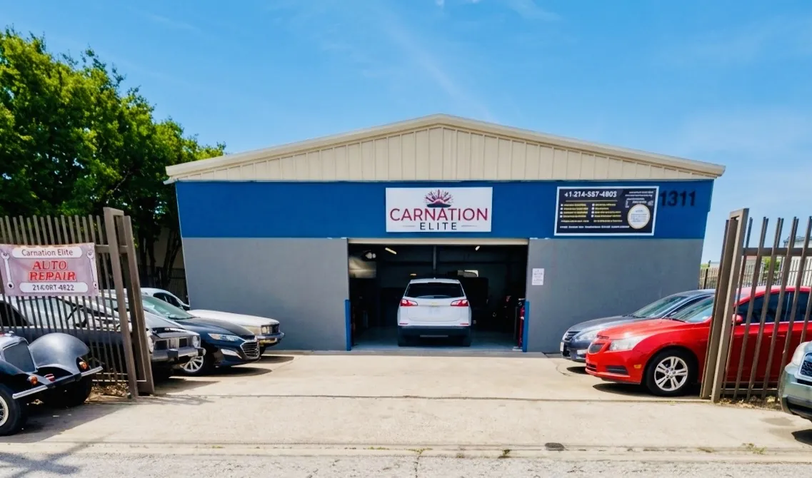

When a car's A/C blows warm or hot air, the most common cause is low refrigerant from a leak. The next most common are a condenser fan that isn't running, a compressor or clutch that isn't engaging, and electrical faults like a blown fuse or bad relay. Less often, it's a blend door stuck on the heat side.
In Dallas, where a parked car can get dangerously hot inside within minutes, a weak A/C isn't something to put off until fall. Here is how our technicians at CarNation Elite narrow it down, and what you can check yourself first.
Quick check: match the symptom to the cause
| Symptom | Most likely cause |
|---|---|
| Cold on the highway, warm at idle or in traffic | Condenser fan not running, or refrigerant slightly low |
| Cools for a few minutes, then turns warm | Low refrigerant, a cycling compressor, or an icing evaporator |
| Never gets cold at all | Compressor clutch not engaging, blown fuse or relay, or empty system |
| Cold on one side, warm on the other | Blend door actuator fault (common on dual-zone systems) |
| Clicking, rattling or squealing when A/C is on | Failing compressor clutch, bearing or belt |
| Weak airflow even on high | Clogged cabin air filter or a failing blower motor |
The 8 most common causes
1. Low refrigerant from a leak
A/C is a sealed system. If refrigerant is low, it leaked out somewhere: an O-ring, a hose, the condenser, or the compressor seal. Topping it off without finding the leak usually buys a few weeks. We find leaks with UV dye and electronic detectors, fix them, then recharge to the manufacturer's exact capacity.
2. Condenser fan not running
The condenser sits in front of the radiator and sheds heat from the refrigerant. At highway speed, airflow does that job; at idle, the fan has to. If your A/C is cold on the highway but warm in traffic on 635, a dead fan, fan relay or fan motor is a prime suspect.
3. Blocked or damaged condenser
Bugs, road debris and bent fins cut airflow through the condenser. Stones from highway driving can also puncture it, which shows up as a leak.
4. Compressor clutch not engaging
With the engine running and A/C on, the center of the compressor pulley should spin. If it doesn't, the cause could be a worn clutch, a bad clutch coil, an air gap that has grown too wide, or a pressure switch stopping it because refrigerant is low.
5. Failed compressor
Refrigerant carries the compressor's lubricating oil. A compressor run low on refrigerant runs short on oil and eventually seizes. A sudden loss of cooling, often with a noise, points here. If your A/C quits suddenly, don't keep switching it on and off.
6. Electrical faults
Blown fuses, failed relays, broken wiring and bad pressure sensors can all stop the system from turning on. These are often the cheapest fixes, but they need testing to find.
7. Blend door actuator
A small motor behind the dash controls how much air passes over the heater core. If it fails or loses calibration, hot air mixes in no matter how good the refrigerant side is. A clicking sound behind the dash is a common clue.
8. Clogged cabin air filter or weak blower
This doesn't make air hot, but it makes it feel that way by cutting airflow. In North Texas, dust, cedar and pollen can clog a cabin filter in months.
What you can check yourself
- With the A/C on and the engine idling, see if the condenser fan runs and the compressor pulley's center spins.
- Check the A/C fuses and relays listed in your owner's manual.
- Replace the cabin air filter if it hasn't been done in a year.
- Feel both front vents; if one side is cold and the other warm, it's likely a blend door, not refrigerant.
We don't recommend DIY recharge cans. Without gauges, it's easy to overcharge the system, which also causes poor cooling and strains the compressor. Some cans also contain sealants that can clog shop recovery equipment and system parts.
Get it checked before the worst of summer
A/C problems rarely fix themselves, and a system running low on refrigerant can take the compressor with it. If your A/C feels weaker than last summer, have it checked in April or May, before every shop in Dallas is booked solid.
Frequently asked questions
Why does my car A/C blow cold on the highway but warm in traffic?
The condenser needs airflow to shed heat. At highway speed the wind does that; at idle the cooling fan must. A fan that isn't running, or slightly low refrigerant, is the usual cause.
Is it safe to drive with the A/C blowing hot air?
The car is usually safe to drive, but in Dallas summer heat a hot cabin can be a real health risk, especially for children, older passengers and pets. If the temperature gauge also rises, stop and have the cooling system checked.
How long does an A/C recharge last?
If the system has no leak, a correct recharge can last for years. If it needs refrigerant again within weeks or months, there's a leak that needs repair.
Why does my car A/C smell musty?
Mold or bacteria on the evaporator, usually from moisture that doesn't drain or dry out. Cleaning the evaporator, treating it, and replacing the cabin filter normally clears it.
Get a straight answer on your car
Describe what you're seeing and we'll tell you how urgent it is. Written quote before any work starts.
Book Appointment Call (214) 597-4922